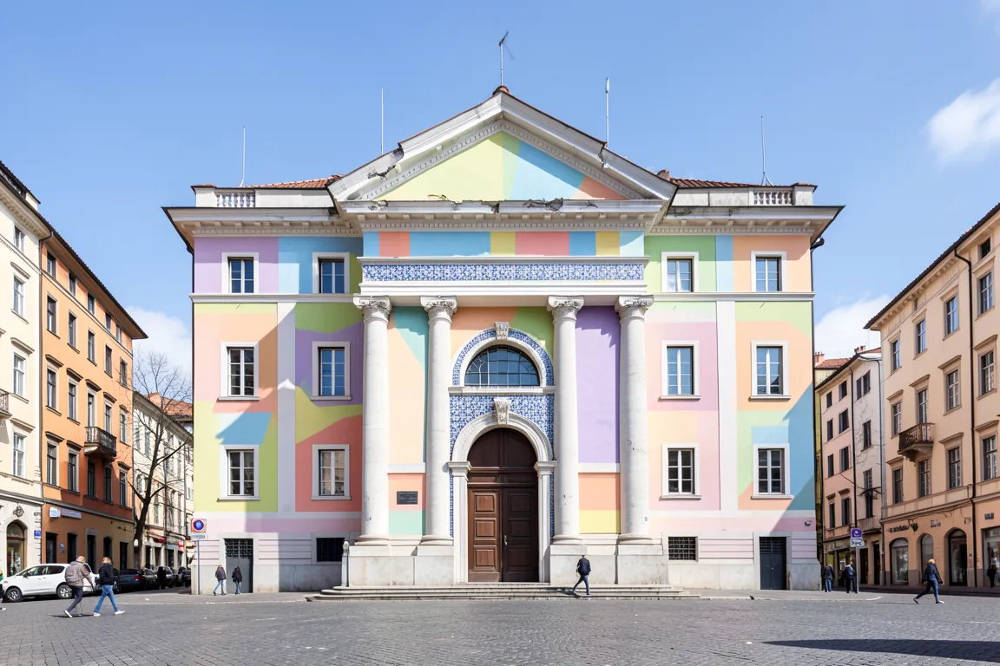

En bygning som siterer historien med et glimt i øyet og i farger: delte frontoner, gigantiske sluttsteiner, pastellstein og en fasade som fungerer som et skilt. Venturi, Graves og Johnson brukte den som svar på den moderne bevegelsens tomme boks.

Kjerneidé
Arkitektur er kommunikasjon: en bygning skal bære mening, minne og ironi, og et dekorert skur er bedre enn en tom boks.
Designprinsipper
Siter en historisk form i endret skala, farge eller materiale: en sluttstein tre ganger for stor, eller en søyle i kryssfiner.
Komponer fronten som et skilt: en flat fasade av 2 til 4 tydelige lag, med inngangen og tittelen markert som et symbol.
Splitt og legg lag på de klassiske elementene: en brutt fronton, en kuttet søyle, en loggia som bare er et bilde av en loggia.
Mal bygget: bruk 3 til 5 flate pastellfarger i store felter på stein, puss og fliser.
Kombiner to eller flere koder i én front, populære og lærde, og la motsigelsen synes.
Gjør inngangen til en scene: en høy bue eller en portal på 6 til 10m, med en lys lobby bak.